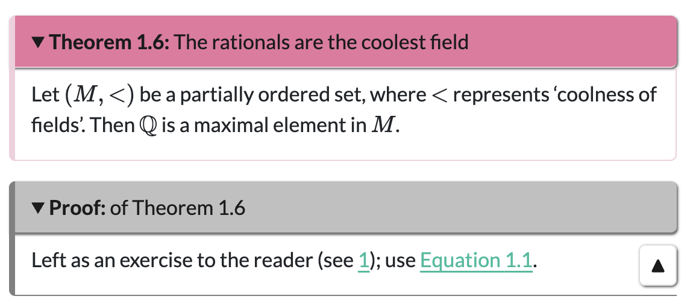

{kind=link}
[1] 210SMSN Quarto workshop
Accessible documents for all :)
Tom Coleman (University of St Andrews)
2026-03-04
Why Quarto?
Quarto is a powerful open-source typesetting language. Including both R and Python functionality, it can be used to write a huge range of outputs including full websites of html pages, interactive Python or R workbooks via Jupyter, dynamic and accessible slides, or even traditional lecture notes.
Structure of the workshop
This hands-on interactive workshop will teach you how to create and build Quarto documents. The workshop will cover:
- how to build Quarto documents (Part 1)
- writing content in Quarto (Part 2)
- working with revealjs slides (Part 3)
- authoring longer-form documents such as lecture notes (Part 4).
Templates are provided.
Part 1: Let’s build
Let’s get started
Open up your editor of choice.
Download the Quarto template from [LINK] either locally (R Studio) or onto your cloud (Posit Cloud)
If using R Studio or Posit Cloud, open up the .RProj file, and then open index.qmd inside the project. If not, open up index.qmd.
Click ‘Render’ above the source code (if using R Studio or Posit Cloud) or render in another way if using another editor.
The html should appear on your preferred browser.
Creating your own file
In the same R Studio session/same directory as index.qmd file, duplicate the index.qmd file and rename it to (filenameofyourchoice).qmd.
Change the title and author at the top to an appopriate title and appropriate author.
Type ‘Hello universe’ underneath the bottom three dashes
---.Click ‘Render’ above the source code (if using R Studio or Posit Cloud) or render in another way if using another editor.
The html should appear on your preferred browser.
Question break/breather: has everyone rendered a file?
Structure of a Quarto document (1/2)
In your file, there are two distinct parts: the YAML header and the content.
The YAML header, contained between three dashes ---, is written in a language called YAML, and provides local options for the .qmd page (such as a title, author, preferred format, abstract, etc.)
Everything after that is the content, and can include almost anything you want, from writing to code.
Structure of a Quarto document (2/2)
There are a few main ways to provide flavour to your writing. Of note are
- spans
[](){}that provide in-line formatting - div blocks
:::{.divname} ... :::providing formatting to blocks of text - code blocks to display code (three backticks, space)
- code chunks, which are blocks of executable code that Quarto runs during the rendering process, outputting a result (such as using R to provide a figure).
- comments
<!-- this is commented out -->(in R Studio, highlight and Ctrl/Cmd + Shift + C)
Warning
Code chunks are not in general executable on the html Quarto output; you will need to use a specialised format such as a Jupyter notebook to enable this functionality.
Structure of the YAML header or .yml file (1/2)
Here is the structure of the YAML header for this slidedeck:
You’ll notice that revealjs: is indented by two spaces, and theme: is indented by two spaces after that. These are different option levels for format:, and option levels are always in multiples of two spaces.
Structure of the YAML header or .yml file (2/2)
You can create lists of options by using multiple - at different option levels. For instance, changing format: html in your .qmd file to
will build this file in both html and docx formats. Adding to the .yml file will build all documents in both html and docx formats.
If you wanted to add options to both of these, you will need a slightly different format:
What happens when you render
Every time you click render on a .qmd file, Quarto ‘knits’ any code chunks by running the code, puts it into a Markdown (.md) file, then uses Pandoc to convert to the file format(s) specified in the YAML/.yml. These file formats include (but are not limited to):
- html (for websites, default output)
- pdf (via LaTeX, need a TeX distro or the R package
tinytex) - MS Word
- revealjs (html presentation format, like this)
- Jupyter notebooks (interactive Python/R notebooks)
Quarto project types
There are many types of Quarto project.
- website (what this template is on)
- book (what the other template is written on, see Part 4)
- manuscript (for more formal scientific writing)
- blog (for less formal scientific writing, amongst other things)
This workshop will be based on the website project class, with Part 4 using the book project class.
Architecture of a Quarto website
Every buildable quarto website requires the following, which you can see in the directory
- index.qmd (root document)
- (underscore)quarto.yml (global settings)
You might have .qmd files for different parts of your quarto project; these are optional.
The template also comes with two more files in the directory:
- an R Project file (workspace image for R Studio)
- presentation-blue.css (make my slide deck look pretty :) )
Building a document (1/2)
If you want to build a single qmd file, in or outside of a project environment, then clicking the ‘Render’ button as before will provide a preview of this page in your browser.
This is very useful for checking small changes to a single .qmd file as you go along, or preparing a single .qmd file for publication.
However, if you have multiple .qmd files in your project, this is not enough to put in all the necessary architecture when preparing a website for publication.
Building a website (2/2)
To prepare a full website for publication, you will need to run a full render command. To do this in R Studio, first:
- save all of your documents
then click ‘Build’ and then ‘Render Website’, or enter the following command in the console:
quarto::quarto_render()
What this does is build every .qmd file in the directory, and puts it in the _site folder. This is then a fully working website, with all interconnected links working, ready for publication.
Tips for building
Tip
To omit a file from a global build, put an underscore _ in front of the file name. This machinery is used by Quarto to avoid building the global .yml file and any files in _site.
To omit a single file from the finished product, include
draft: truein the YAML header. This will still build the file, but any links to it will not be created in the final product and it will not exist on any listings.An example of a complex website architecture using Quarto can be found by clicking this sentence.
Standalone Quarto documents
This may seem like too much… and it is. You are able to build standalone quarto documents with a single .qmd file.
However, I often find it more sensible to have one directory/R Project per thing:
- keeps all working on the thing together
- easier to handle multiple .qmd files at once (questions.qmd, answers.qmd, for instance)
- better architecture for multiple outputs by using global settings
- publishing the content to a private GitHub repo allows you to use Pages to host your material online.
Question break/breather: are there any questions?
Part 2: Let’s write
How to write
Quarto is based on the Markdown language, and as such, uses Markdown syntax. If you are familiar with how to write Markdown, then what follows might already be second nature to you.
If you are not familiar with Markdown, then here is how to write stuff in Quarto.
I will try and indicate which formats are used and where.
Text formatting (all formats)
Quarto supports lots of different ways to format text:
| style | syntax | example |
|---|---|---|
| bold | **text** |
a bold move |
| italics | *text* |
the Italic Version |
| both | ***text*** |
a bold Italic move |
| strikethrough | ~~text~~ |
|
| super/subscript | te^xt^, te~xt~ |
superscript, subscript |
| underline | [text]{.underline} |
I hate underlining. |
| small caps | [text]{.smallcaps} |
I also hate smallcaps. |
| highlighted | [text]{.mark} |
I don’t mind highlighting. |
Headings (html, pdf, word)
There are six levels of headings in Quarto, and you can reach any of these by using an appropriate amount of # keys before the heading title.
and so on.
Tip
To make an unnumbered section (pdf, word), add {-} or {.nonumber} after the heading title.
Note
Headings work differently in revealjs or other presentation formats; see Part 3 for more.
Hyperlinks (all)
You can hyperlink to other pages in your website project:
- link to page:
[slides template](slidestemplate.qmd)gives slides template
There are two ways to include hyperlinks to external sites:
plain:
<https://github.com/>gives https://github.com/.regular:
[click here find more on hyperlinks](https://quarto.org/docs/authoring/markdown-basics.html#links-images)gives click here to go to GitHub.
Tip
You can use standard file path syntax to hyperlink things in different folders. For example [link](./1/2.qmd) links to the file 2.qmd in the subfolder 1, and [link](../3.qmd) links to the file 3.qmd in the parent folder of the qmd file you are working on.
Lists (all, 1/2)
In this example of a list, the dash - is used, but you can also use + or *. (Note: other mathematical operators are as yet untested.)
The spacing here between sublists is important and come in multiples of 2 for unordered lists and 4 for ordered lists.
- first unordered
- second unordered
- first subitem
- first subsubitem
- second subitem
- first subitem
- third item
- ordered item
- ordered subitem
- ordered subitem
- subsubitem
- second ordered item
Lists (all, 2/2)
Quarto is slightly fiddly when it comes to list continuations. See across.
Any list in Quarto requires an entire blank line before the list starts.
first unordered item
continue
second unordered item
- List item 1!
Too enthusiastic.
- List item 2.
Tables
| Right | Left | Default | Center |
|---|---|---|---|
| Tom | takes | great | happiness |
| in | writing | Markdown | tables |
Images and figures (all, 1/2)
{width="75%" fig-alt="A picture of a beautiful tabby cat sitting in front of a laptop on a carpet, with sunlight streaming in through bay windows." fig-align="left"}The syntax here implies that captioning is mandatory for images; you can leave it blank if needed. What you should definitely have is alt-text, which is provided by the fig-alt; it appears in the html output for access by screen readers.

Images and figures (all, 2/2)
{width="75%" fig-alt="A picture of the same beautiful tabby cat, sitting in front of a window." fig-align="right" #fig-mimiagain}Nothing else here to say, just wanted to show more pictures of cats.
Actually, that’s a lie; I’ve identified this as a figure for cross-referencing purposes later in the talk.

Videos (html for sure, definitely not pdf, word??)
Here’s how to video.
(two open braces)< video ./figures/mimivideo.mp4 width="270" height="480" title="Mimi is petted.">(two close braces)This is a video included as a local file, but you can use YouTube links as well to embed videos in your document.
Maths (all)
All maths syntax is provided by LaTeX commands, with accessibility support provided by MathJax.
Inline maths is represented by single dollars: for instance $\{n > 0\; : \; n\in\mathbb{N}$ provides \(\{n > 0\; : \; n\in\mathbb{Z}\}\).
Display maths is represented by double dollars: for instance
gives \[(x+y)^n = \sum_{k=0}^n\binom{n}{k}x^{n-k}y^k.\]
Tip
Output of maths in MS Word is given by their native editor. It does not really recognise custom commands, but these can be used in other formats.
To produce an array of equations outputtable in all formats, use $$\begin{aligned}...\end{aligned}$$ and treat this as an eqnarray environment.
Code blocks (html)
You can display blocks of code, using the following syntax:
to get
Pandoc supports highlighting for 140 languages. For more about code blocks, particularly in html, you can see this link here.
Code chunks (html)
You can include snippets of code to be run by Quarto as it builds your document, using the following syntax:
to get
which is what you’d expect as \(\displaystyle \binom{10}{6}\) is 210.
Tip
Add options to executable code chunks by #| option: value directly below the three ticks and {r} For instance, you can stop Quarto from displaying the code above by amending to #| echo: false.
Embedding stuff (all, depending)
You can embed raw content into your Quarto file. For instance:
In addition, you can embed output content from another Quarto workbook (such as a Jupyter notebook) into a html file for ease of use. Please click this link to find more.
Cross-references (all)
Internal cross-references can be put into figures, tables, section headings.
To do this, you need a label and a reference somewhere in the text.
Labels always have the following form #identifier-string where ‘identifier’ is a preset identifier prefix and ‘string’ is a string of text. Identifier prefixes include fig (figure), tbl (table), eq (equation), sec (section), lst (code block);
To reference a label in the text, write @identifier-string. This creates a reference, like Figure 1. Click this link to find out more about cross-referencing.
Callout blocks (most)
Here’s a callout block; divs that draw attention to things.
Note
There are five types of callout block; note (identifier prefix not), warning (identifier prefix war), important (identifier prefix imp), caution (identifier prefix cau), tip (identifier prefix tip). Replace ‘note’ in callout-note above to get your desired box.
Callout boxes also exist for mathematical environments, but these do not count sequentially. (See Part 4.)
Conditional content (all)
You might want to have an interactive html version of a document coupled to a printable pdf version, where interactivity between the two could display very differently. You could use conditional content to facilitate this.
You can change visible to hidden, and when to unless, and html to genericoutput to fully facilitate all possible options.
Question break/breather: are there any questions?
Part 3: Let’s present
Formatting
To create a presentation file, here’s what to do:
Open up index.qmd and duplicate this file in the same directory. Give it a snappy name like (myfirstpresentation.qmd).
Change the title, author to appropriate things.
Next, change
format: htmltoformat: revealjsDelete everything under the bottom three dashes
---.Click render, or build in whatever way seems comfortable.
The html should appear in your browser, and it should be a title slide.
Why revealjs?
This is a native html presentation, which means it is accessible as standard.
Translate all of your beautiful Quarto code to presentation format, including use of LaTeX maths, R/Python code blocks and chunks, embeddable videos etc.
In fact, almost all of the content in Part 2 can be applied here as well.
The html scales to the size of your browser window, making it excellent for use on all sizes of screen.
Not proprietary.Not made by Microsoft.Free to use and share!
Adding slides to the document
To add slides to the document, you use headings. Two hashes ## give you a new slide. One hash # gives you a way to split slides into bits. Further hashes ### give slide subtitles. A triple dash --- creates a slide without a title.
Making slides fit
Sometimes, your content won’t fit on the slides. There are two ways to deal with this. One, you can make your text smaller; two, you can make the slide scrollable.
To do this, add .{.smaller} or {.scrollable} directly after the slide title:
Columns
To split slides into columns, you can do the following with nested divs:
content on left
content on right
Presenting: pauses and increments (1/2)
To pause between two blocks of text, use . . . between paragraphs
like this.
You can reveal lists incrementally by the following.
- This appears first.
- Then, this appears.
- Boo!
You can add a logo and footer text to your slides by using options logo: filepathtologo.png and footer: footer text in the YAML header.
Presenting: asides, footnotes, speaker notes (2/2)
Here’s how to put a footnote in1: text^[footnote text]. And here’s how to do an aside:
You can add speaker notes to your presentation by adding the following div to the very bottom of a slide:
To access speaker notes, press S when the revealjs file is open in your browser.
Themes
There are 12 different ‘bootstrap’ themes available for use. These are:
beigeblooddarkdefaultdraculaleague
moonnightserifsimpleskysolarized
You can change these in the YAML header. You can also modify your slide backgrounds slide by slide as well; click this sentence to find out more.
Alternatively, you can modify a CSS document as I have done, but:
Warning
CSS files are a black hole for your time.
Question break/breather: are there any questions?
Part 4: Let’s write more
The Quarto book project class
If, like me, you have cause to regularly output long-form mathematical writing to different outputs (html and pdf), then the book project class may be more appropriate for you.
The book project class is a special kind of website that bestow numbers on chapters, allowing you to cross-reference between chapters. And…er…that’s it.
If you are a LaTeX user, you can think of this as the difference between document classes article and report.
This section outlines some more advanced Quarto writing techniques in the book document class.
Why: proper counting (1/2)
Part of the appeal of the book project class for me is the ability to count theorem environments sequentially overall, rather than by environment. So instead of having
Definition 1.1
Theorem 1.1
Proof
Corollary 1.1
Definition 1.2you will have
Definition 1.1
Theorem 1.2
Proof
Corollary 1.3
Definition 1.4(objectively better). This is achieved through the use of a Quarto extension, a piece of code that extends Quarto’s capabilities to more specialised uses (if that is possible…)
Why: custom maths commands (2/2)
The other thing that works well in the book project class is the idea of custom commands for typesetting mathematics. While you can do this locally in Quarto on every html page, this can be a little bit of a faff. By using conditional content (see Part 2), you’re able to put your custom commands into only two files and include them.
The inputs
All chapters are included as separate .qmd files. These will only be built with a quarto::quarto_render() command if you tell it to. For this reason, the _quarto.yml file is super important. Here’s an excerpt from the _quarto.yml class in the book template:
_quarto.yml
This is a list of everything you want built by quarto::quarto_render().
pdf output
You may notice that there were two lines that were commented out of the previous code block.
These govern pdf output, and by opening up the .yml file (in QuartoBookTemplate) and uncommenting all of the commented lines in there, you can create a simultaneous pdf output for your document.
Warning
You may be prompted to install more packages to do this; please do so if you want a pdf output.
There are some options there to play with as well :)
What else?
You can customise your section depth using
number-depth: numberas aformatoption; this will give you control of numbering sections (depth 1), sections and subsections (depth 2) and so on.You are able to create a bibliography by including a
{.refs}div at the bottom of the document.You are able to create an index in a pdf output by using the
makeidxTeX engine.
Maths environments in the book template (1/3)
There is a folder called _extensions in the QuartoBookTemplate repo which contains the extension called custom-numbered-blocks. To tell a .yml file to use a particular extension, you need to call it as a filter:
Then, there are options further down the .yml file which has configured this extension to handle all sorts of different maths environments. These are:
Theorem, Corollary, Proposition, Lemma, Algorithm, Question, Observation, Conjecture, Definition, Remark, Aside, Example, Feature, Proof, Solution, Claim, Notation, Conventionand you can add more if needed!
Maths environments in the book template (2/3)
Here’s an example, with output given in Figure 2.
:::{.Theorem #theoremrationals}
## The rationals are the coolest field
Let $(M,<)$ be a partially ordered set, where $<$ represents 'coolness of fields'. Then $\mathbb{Q}$ is a maximal element in $M$.
:::
:::{.Proof .unnumbered}
## of Theorem \ref{theoremrationals}
Left as an exercise to the reader (see \ref{Q1}); use @eq-rationals.
:::The output looks like this:

Figure 2: Mimi in calmer times.
You can collapse any of these environments.
Maths environments in the book template (3/3)
The
#term in the braces is a reference label; unlike the inbuilt Quarto referencing system, references to these environments are called with\ref{theoremrationals}. All other references are done with@eq-thingas Quarto standard.The
##term inside the div gives the theorem a title.All environments are numbered by default; to unnumber them, include an
.unnumberedin the braces.Theorems and definitions are added to a listing .qmd that you can include in the appendices.
Custom commands
To make sure custom commands are usable, you can put all of your macros in both the _preamble.qmd file and (if using pdf output) the preamble.tex. The way that this works on every page is the inclusion of the following on line 1 of each qmd file:
This will then put all of your macros in both the html and pdf output. In addition, you can customise your LaTeX output by adding as many packages as you want.
That’s all folks!
Let me know what you think
I would be very grateful if you took the time to fill in a Google form about today’s workshop, in order to improve the workshop for potential future runnings and to help me understand the impact of today’s workshop. All submissions are entirely anonymous.
Any other questions, comments, thoughts, please let me know at tdhc (at) st (dash) andrews (dot) ac (dot) uk.
Thank you so much for coming, and Happy Quartoing! (Quarting? Quartoisation?)